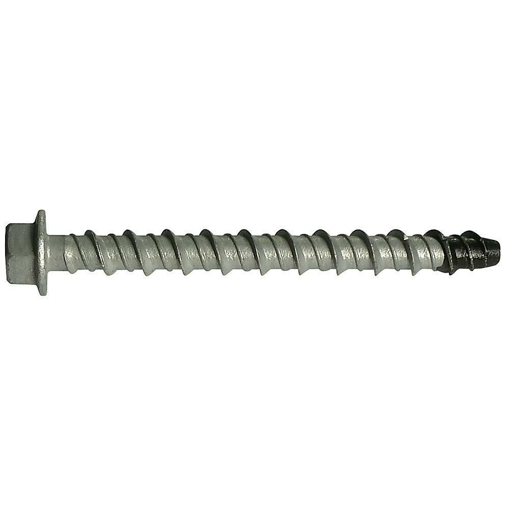

Анкер-шуруп по бетону (MUAF)MUAf Анкерный болт универсальный (термодиффузионное цинкование), FastyFasty35,47 ₽ Есть варианты
Анкер-шуруп по бетону (MUAF)HUS Анкер-шуруп, Шестигранная головка, Оцинкованный ГрафHUS60,48 ₽ Есть варианты